音楽理論とは
音の組み合わせなど、音楽の仕組みを体系的にまとめたものです。

作曲者のためのコード進行
音の組み合わせなど、音楽の仕組みを体系的にまとめたものです。
「1オクターブ」（音の高さがちょうど2倍になる関係）を、12個の等しい音程に分割するルールを「12平均律」と呼びます。ピアノの鍵盤も、1オクターブの中に白鍵と黒鍵あわせて12個の音が並んでいます。
音楽様式によって使われる音の数は異なり、箏音階やペンタトニックなどがあります。
音楽理論では、ドレミ表記より英字表記が主流です。ド ド# レ レ# ミ ファ ファ# ソ ソ# ラ ラ# シ は、C C# D D# E F F# G G# A A# B と表します。
音名と実際の響きは、下の「1オクターブ鍵盤」で確認できます。
C/Am Key は、Cが中心のメジャーKey（明るい曲調）とAが中心のマイナーKey（哀愁あるかっこいい曲調）が同じ構成音になるための表記です。コード進行の最後が 1 で終わるとメジャーKey（明るい曲調）、6- に着地するとマイナーKey（哀愁あるかっこいい曲調）になる傾向があります。
コード（和音）とは、ルート（根音）に対して異なる高さの音を複数同時に鳴らして作る響きのことです。
ルート（根音）から数えて、4つ目と7つ目の音を重ねたもの。
例：C・E・G → 表記「C」／読み方「Cメジャー」
メジャーコードの真ん中の音（3度）を半音下げたもの。
例：C・D#・G → 表記「Cm」／読み方「Cマイナー」
音名ではなくキー内の位置を数字で表すと、それぞれのコードが持つ役割と、次にどこへ進もうとしているかを追いやすくなります。キーが変わっても数字の並びは変わらないため、同じ進行パターンをすぐに見つけられ、移調後も曲の構造を保ったまま演奏できます。
1→4→5→14add9→5→6-→6sus2→4sus2→5→6-→5#-→5-→4#-度数表記には、コードをローマ数字で表す伝統的な「ディグリー表記」と、1950年代後半にナッシュビルのスタジオで考案された数字中心の「ナッシュビル・ナンバー・システム」があります。
ナッシュビル表記では、たとえばメジャーの 3 とマイナーの 3- を明確に区別できます。ディグリー表記の III と iii よりもフォントや画面サイズの影響を受けにくく、キーが変わっても同じ数字列を使えるため、演奏現場での視認性と移調のしやすさに優れています。
例：1 4 5 1。NNSコード進行をスペース区切りで入力して再生できます。
基本形は「ルート + 品質 + 付加・変化 + ベース音」。要素の置き場所を揃えることで、長いコードでも判読しやすくなります。
7sus4add9構成音はルート（根音）から何半音上にあるかで説明します。「-」はマイナー、「#」は半音上を示します。
△7ルート（根音）に、4・7・11半音上の音を重ねたもの。澄んだ都会的な明るさ。
△9ルート（根音）に、4・7・11・14半音上の音を重ねたもの。△7に9度の透明な広がりを加えた響き。
△11ルート（根音）に、4・7・11・14・17半音上の音を重ねたもの。澄んだ明るさに広い浮遊感が加わる。
△13ルート（根音）に、4・7・11・14・17・21半音上の音を重ねたもの。明るく豊かで開放的な響き。
-△7ルート（根音）に、3・7・11半音上の音を重ねたもの。暗さの中に鋭い光が残る響き。
-7ルート（根音）に、3・7・10半音上の音を重ねたもの。柔らかく落ち着いたマイナーの響き。
-6ルート（根音）に、3・7・9半音上の音を重ねたもの。哀愁と温かさが同居する響き。
-9ルート（根音）に、3・7・10・14半音上の音を重ねたもの。暗さに透明な広がりが加わる。
-11ルート（根音）に、3・7・10・14・17半音上の音を重ねたもの。深く広がる落ち着いた響き。
-13ルート（根音）に、3・7・10・14・17・21半音上の音を重ねたもの。哀愁を保ちながら豊かに広がる。
7ルート（根音）に、4・7・10半音上の音を重ねたもの。次のコードへの解決を強く促す。
6ルート（根音）に、4・7・9半音上の音を重ねたもの。素朴で温かい明るさ。
9ルート（根音）に、4・7・10・14半音上の音を重ねたもの。7thの緊張に透明感が加わる。
11ルート（根音）に、4・7・10・14・17半音上の音を重ねたもの。広がりと濁りが共存する。
13ルート（根音）に、4・7・10・14・17・21半音上の音を重ねたもの。華やかで豊かな緊張感。
(69)ルート（根音）に、4・7・9・14半音上の音を重ねたもの。明るく軽快で開放的な響き。
add9ルート（根音）に、4・7・14半音上の音を重ねたもの。爽やかさと透明感が加わる。
-add9ルート（根音）に、3・7・14半音上の音を重ねたもの。マイナーの哀愁に繊細な広がりが加わる。
add11ルート（根音）に、4・7・17半音上の音を重ねたもの。素朴な広がりと少しの摩擦が生まれる。
add13ルート（根音）に、4・7・21半音上の音を重ねたもの。柔らかな甘さが加わる。
sus2ルート（根音）に、2・7半音上の音を重ねたもの。長調・短調を曖昧にする透明な響き。
sus4ルート（根音）に、5・7半音上の音を重ねたもの。宙に浮いた期待感が生まれる。
7sus4ルート（根音）に、5・7・10半音上の音を重ねたもの。解決を強く待つブルージーな響き。
omitコードから指定された構成音を省いたもの。濁りの回避や演奏帯域の整理に使う。
dimルート（根音）に、3・6半音上の音を重ねたもの。不安定で緊張した響き。
dim7ルート（根音）に、3・6・9半音上の音を重ねたもの。不安と切迫感が強い響き。
-7(-5)ルート（根音）に、3・6・10半音上の音を重ねたもの。マイナー7thの5度を半音下げた不安定な響き。
blkルート（根音）に、3・6・10半音上の音を重ねたもの。ブルース的な陰影が生まれる。
(4.4)ルート（根音）に、5・10・15半音上の音を重ねたもの。4度を重ねた硬質で開放的な響き。
(4.3)ルート（根音）に、5・9・14半音上の音を重ねたもの。4度と3度を組み合わせた響き。
(5#)ルート（根音）に、4・8半音上の音を重ねたもの。通常の5度を半音上げた響き。
(-5)ルート（根音）に、4・6半音上の音を重ねたもの。通常の5度を半音下げた不安定な響き。
(9#)ルート（根音）に、4・7・15半音上の音を重ねたもの。メジャーとマイナーが衝突する荒々しい響き。
(-9)ルート（根音）に、4・7・13半音上の音を重ねたもの。半音の摩擦が強い暗い緊張。
(11#)ルート（根音）に、4・7・18半音上の音を重ねたもの。明るく浮遊する響き。
(13#)ルート（根音）に、4・7・22半音上の音を重ねたもの。強く尖った色彩が加わる。
(-13)ルート（根音）に、4・7・20半音上の音を重ねたもの。暗く重い陰影が加わる。